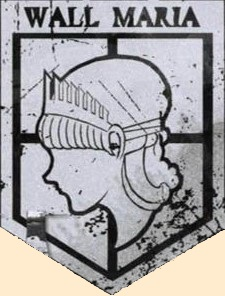
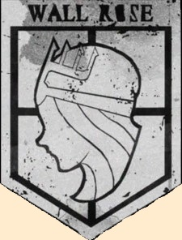
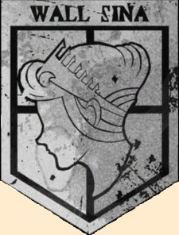
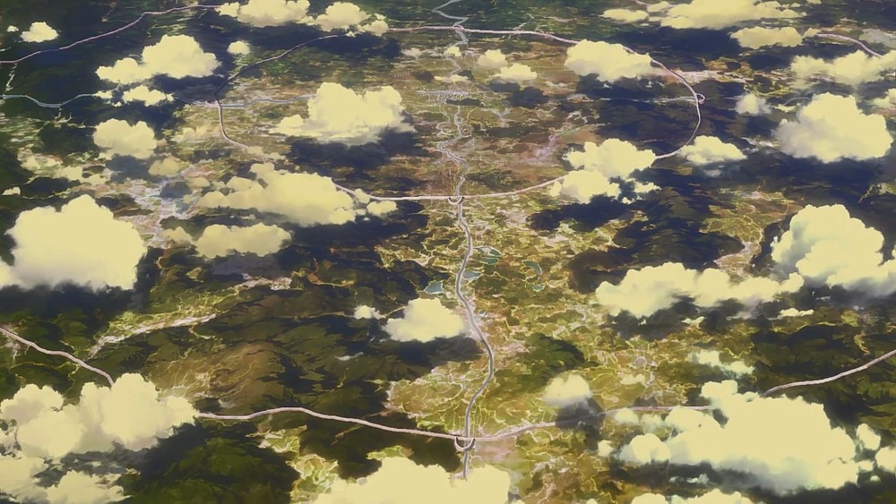
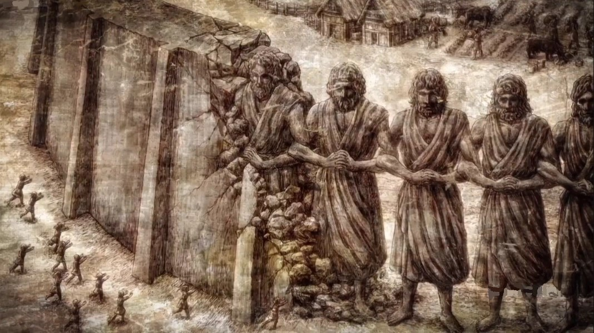

The Universe
Most of the events of Attack on Titan take place on a small island called Paradise Island. In fact, the whole map of Attack on Titan is just an "upside-down" Earth, and Paradise is essentially Madagascar. But I do not want to dive too deep into that; for now, I just want to talk about the walls of Attack on Titan and how they were built.
The Walls
The different parts of the walls.
  
As you may or may not know. The walls of Attack on Titan have 3 important walls with their own name. First it is wall Maria, the outermost wall. Then wall Rose, the second inner most wall. Then is is wall Sina, The inner most Wall.
- Wall Maria
- Wall Rose
- Wall Sina
Civilization in the walls

Interesting enough, the three walls of the Attack on Titan universe reflect a lot on how our society in the modern age works. As mentioned, there are three walls in the Attack on Titan universe. Maria, Rose, and Sina But what really sets them apart is where they are located.
For instance, Wall Maria is the outermost wall, so the people of Wall Maria are more prone to a Titan attack than the people in Wall Rose or Sina. It makes sense that the king of the walls lives in the innermost wall, Wall Sina. The rich and wealthy live in the wall of Sina, while the poorer people live in the wall of Maria. The people that live in Wall Sina also have the added benefit of the military police, who keep the streets clean of crime. Unlike the others, where some of the soldiers are caught drinking in the streets, they are sometimes the ones to start fights
So, in short, the way civilization works in the walls is that the less fortunate live in the outermost walls while the rich and wealthy live in the innermost walls. Which is kind of like a hierarchical type of situation where the bottom gets the least and the top gets the most, even though the bottom is where most people are.
How the walls were built

The perimeter of the Attack on Titan walls is about 2700km to 3000 km, and they are 50 meters tall. So since walls of this scale were only built a century ago in the universe. It seems natural to assume that it is impossible to build something of that scale in a century. But the walls were actually not built by humans. They were built by Titans. These titans were under the control of King Karl Fritz. He built the walls in a way to end the Great Titan War. He took as many of his people to Paradise Island as he could and surrounded them by the walls of today. The people inside got taught that they are the last humans left of humanity and that they are on the brink of extinction. In reality, the Eldian people are all subjects of Ymir. Ymir was the first titan, the founding titan. That is why the people inside the walls can turn into titans if they are injected with a certain amount of spinal fluid.